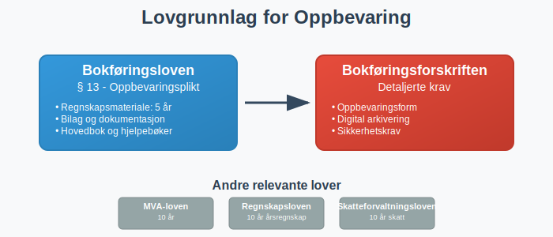
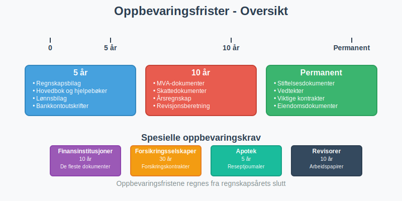
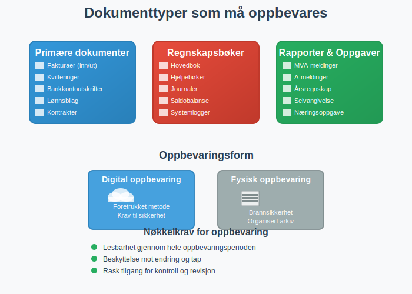
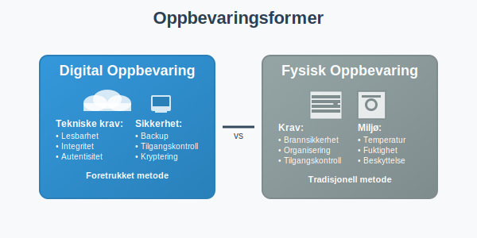
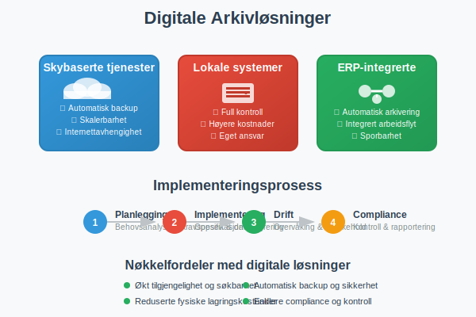
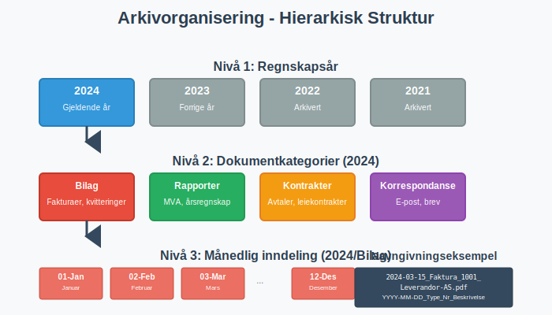
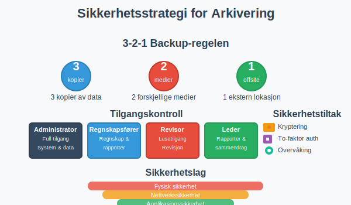
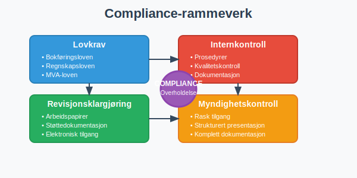
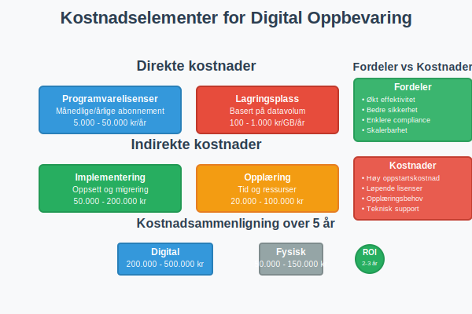
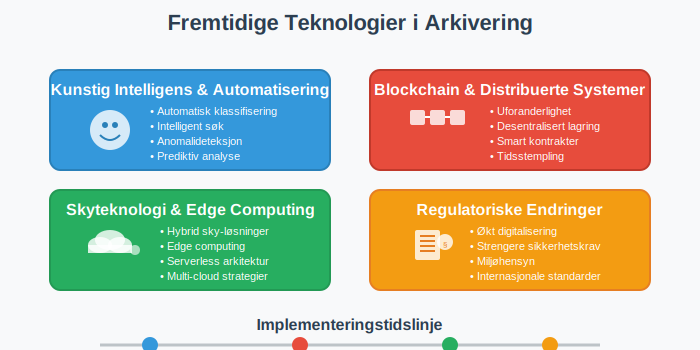

Oppbevaring av regnskapsmateriale er en lovpålagt forpliktelse som alle norske virksomheter må følge. Korrekt arkivering og oppbevaring av regnskapsdokumenter er ikke bare et juridisk krav, men også en kritisk del av god forretningspraksis som sikrer sporbarhet, transparens og mulighet for kontroll og revisjon.
Denne omfattende guiden dekker alle aspekter ved oppbevaring av regnskapsmateriale i Norge, fra lovkrav og frister til moderne digitale løsninger og sikkerhetsprinsipper.
Lovgrunnlag for oppbevaring av regnskapsmateriale
Kravene til oppbevaring av regnskapsmateriale er forankret i bokføringsloven og bokføringsforskriften. Disse lovverkene definerer både hva som skal oppbevares, hvor lenge det skal oppbevares, og i hvilken form oppbevaringen kan skje.

Bokføringslovens krav
Bokføringsloven § 13 fastslår at regnskapsmateriale skal oppbevares i minst fem år etter regnskapsårets slutt. Dette omfatter:
- Regnskapsbilag og grunnlagsdokumentasjon
- Hovedbok og andre regnskapsbøker
- Årsregnskap og årsberetning
- Revisjonsberetninger og arbeidspapirer fra revisjon
Oppbevaringsfrister - detaljert oversikt
Oppbevaringsfristene varierer avhengig av type dokument og virksomhetens karakter. Her er en komplett oversikt:

Tabell: Oppbevaringsfrister for ulike dokumenttyper
| Dokumenttype | Oppbevaringsfrist | Lovgrunnlag | Merknad |
|---|---|---|---|
| Regnskapsbilag | 5 år | Bokføringsloven § 13 | Fra regnskapsårets slutt |
| Hovedbok og hjelpebøker | 5 år | Bokføringsloven § 13 | Inkluderer alle regnskapsbøker |
| Årsregnskap | 10 år | Regnskapsloven § 3-10 | Permanent oppbevaring anbefales |
| Årsberetning | 10 år | Regnskapsloven § 3-10 | Sammen med årsregnskapet |
| Revisjonsberetning | 10 år | Revisorloven § 6-4 | For revisjonspliktge selskaper |
| Lønnsbilag | 5 år | Bokføringsloven § 13 | Inkluderer lønnsslipp |
| MVA-dokumenter | 10 år | Merverdiavgiftsloven § 21-1 | Alle MVA-relaterte dokumenter |
| Skattedokumenter | 10 år | Skatteforvaltningsloven § 8-12 | Inkluderer ligningspapirer, selvangivelse og andre vedlegg |
| Kontrakter og avtaler | 10 år | Anbefaling | Avhengig av kontraktens varighet |
Spesielle oppbevaringskrav
Enkelte bransjer og virksomhetstyper har utvidede oppbevaringskrav:
- Finansinstitusjoner: 10 år for de fleste dokumenter
- Forsikringsselskaper: 30 år for forsikringskontrakter
- Apotek: 5 år for reseptjournaler
- Revisorer: 10 år for arbeidspapirer
Hvilke dokumenter må oppbevares?
En komplett oversikt over regnskapsmateriale som må oppbevares inkluderer:

Primære regnskapsdokumenter
- Fakturaer - både utgående og inngående
- Kvitteringer og kassebilag
- Bankkontoutskrifter og bankavstemming
- Lønnsbilag og lønnsslipp
- Reiseregninger og utleggsbilag
- Kontrakter og avtaler
Regnskapsbøker og -systemer
- Hovedbok med alle kontoer
- Hjelpebøker (kunde-, leverandør-, lager-)
- Journaler og bilagsregistre
- Saldobalanse og råbalanse
- Systemlogger fra regnskapssystem
Rapporter og oppgaver
- MVA-meldinger og MVA-oppgaver
- A-meldinger og lønnsoppgaver
- Årsregnskap og årsberetning
- Selvangivelse og skatteoppgaver
- Næringsoppgave
Krav til oppbevaringsform
Moderne regnskapslovgivning anerkjenner både fysisk og digital oppbevaring, men med spesifikke krav til hver form.

Digital oppbevaring
Digital oppbevaring er i dag den foretrukne metoden for de fleste virksomheter. Kravene inkluderer:
Tekniske krav
- Lesbarhet: Dokumenter må være lesbare gjennom hele oppbevaringsperioden
- Integritet: Dokumenter må være beskyttet mot endring
- Autentisitet: Mulighet for å verifisere dokumentets opprinnelse
- Tilgjengelighet: Rask tilgang for kontroll og revisjon
Sikkerhetskrav
- Backup: Regelmessig sikkerhetskopi på separate lokasjoner
- Tilgangskontroll: Begrenset tilgang basert på roller og behov
- Sporbarhet: Loggføring av hvem som har tilgang til dokumenter
- Kryptering: Beskyttelse av sensitive data
Fysisk oppbevaring
For virksomheter som fortsatt bruker fysisk oppbevaring:
- Brannsikkerhet: Dokumenter må beskyttes mot brann og vannskade
- Organisering: Systematisk arkivering for enkel gjenfinning
- Tilgangskontroll: Sikret oppbevaring med begrenset tilgang
- Miljøkontroll: Passende temperatur og fuktighet
Digitale løsninger og beste praksis
Moderne virksomheter benytter i økende grad digitale arkivløsninger for oppbevaring av regnskapsmateriale.

Typer digitale løsninger
Skybaserte arkivtjenester
- Fordeler: Automatisk backup, skalerbarhet, tilgang fra flere lokasjoner
- Ulemper: Avhengighet av internettforbindelse, datasikkerhet
- Eksempler: Microsoft 365, Google Workspace, spesialiserte arkivtjenester
Lokale arkivsystemer
- Fordeler: Full kontroll over data, ingen avhengighet av eksterne tjenester
- Ulemper: Høyere vedlikeholdskostnader, ansvar for backup og sikkerhet
Integrerte regnskapssystemer
Moderne ERP-systemer inkluderer ofte innebygde arkivfunksjoner som automatisk arkiverer:
- Bilag ved registrering
- Rapporter ved generering
- Transaksjonslogger kontinuerlig
Implementering av digitalt arkiv
Planleggingsfase
- Behovsanalyse: Kartlegg dokumenttyper og volum
- Kravspesifikasjon: Definer tekniske og juridiske krav
- Leverandørevaluering: Sammenlign løsninger og kostnader
- Risikovurdering: Identifiser potensielle utfordringer
Implementeringsfase
- Systemoppsett: Konfigurer arkivstruktur og tilganger
- Datamigrering: Overfør eksisterende dokumenter
- Testing: Verifiser funksjonalitet og sikkerhet
- Opplæring: Tren brukere i nye rutiner
Driftsfase
- Overvåking: Kontinuerlig kontroll av systemytelse
- Vedlikehold: Regelmessige oppdateringer og sikkerhetskontroller
- Backup-verifisering: Test gjenoppretting av data
- Compliance-kontroll: Sikre overholdelse av lovkrav
Organisering og struktur av arkiv
En systematisk tilnærming til arkivorganisering er avgjørende for effektiv oppbevaring og gjenfinning av dokumenter.

Hierarkisk struktur
Nivå 1: Regnskapsår
2024/
├── 2023/
├── 2022/
└── 2021/
Nivå 2: Dokumentkategorier
2024/
├── Bilag/
├── Rapporter/
├── Kontrakter/
└── Korrespondanse/
Nivå 3: Månedlig/tematisk inndeling
2024/Bilag/
├── 01-Januar/
├── 02-Februar/
├── ...
└── 12-Desember/
Navngivningskonvensjoner
Konsistente navngivningsregler sikrer enkel gjenfinning:
- Datoformat: YYYY-MM-DD (ISO 8601)
- Bilagsnummer: Sekvensiell nummerering
- Beskrivende navn: Kort, men informativ beskrivelse
- Versjonshåndtering: V1, V2, etc. for reviderte dokumenter
Eksempel på navngivning:
2024-03-15_Faktura_1001_Leverandor-AS.pdf
2024-03-20_Lonnslipp_Mars_Ansatt-123.pdf
2024-03-31_MVA-melding_Q1-2024_Final.pdf
Sikkerhet og backup-strategier
Datasikkerhet er kritisk for oppbevaring av regnskapsmateriale, spesielt med økende cybertrusler og strenge personvernkrav.

3-2-1 Backup-regelen
En robust backup-strategi følger 3-2-1 regelen:
- 3 kopier av alle kritiske data
- 2 forskjellige medietyper (f.eks. disk og sky)
- 1 kopi offsite (geografisk adskilt lokasjon)
Tilgangskontroll
Rollebasert tilgang
- Administrator: Full tilgang til alle dokumenter og systeminnstillinger
- Regnskapsfører: Tilgang til regnskapsdokumenter og rapporter
- Revisor: Lesetilgang til alle dokumenter i revisjonsperioden
- Leder: Tilgang til rapporter og sammendrag
Autentisering
- Sterke passord: Minimum 12 tegn med kompleksitet
- To-faktor autentisering: Ekstra sikkerhetslag
- Regelmessig passordendring: Kvartalsvis eller halvårlig
- Automatisk utlogging: Etter inaktivitet
Kryptering og datasikkerhet
- Kryptering i hvile: Alle lagrede dokumenter krypteres
- Kryptering i transitt: Sikker overføring av data
- Nøkkelhåndtering: Sikker oppbevaring av krypteringsnøkler
- Regelmessige sikkerhetstester: Penetrasjonstesting og sårbarhetsscanning
Compliance og kontroll
Overholdelse av regnskapslover og -forskrifter krever systematisk tilnærming til compliance og kontroll.

Internkontroll for arkivering
Etablering av internkontroll for arkivering inkluderer:
Prosedyrer og rutiner
- Arkiveringsprosedyrer: Detaljerte instruksjoner for arkivering
- Kvalitetskontroll: Regelmessig kontroll av arkiverte dokumenter
- Tilgangslogging: Sporing av hvem som har tilgang til dokumenter
- Regelmessig gjennomgang: Årlig evaluering av arkivsystem
Dokumentasjon
- Arkivplan: Oversikt over arkivstruktur og -prosedyrer
- Oppbevaringspolicy: Retningslinjer for oppbevaring og sletting
- Beredskapsplan: Prosedyrer ved systemfeil eller datatap
- Opplæringsmateriell: Dokumentasjon for brukere
Forberedelse til kontroll og revisjon
Tilrettelegging for myndighetskontroll
- Rask tilgang: Mulighet for umiddelbar fremlegging av dokumenter
- Strukturert presentasjon: Logisk organisering av materiale
- Komplett dokumentasjon: Alle påkrevde dokumenter tilgjengelig
- Sporbarhet: Mulighet for å følge transaksjoner fra bilag til regnskap
Revisjonsklargjøring
- Arbeidspapirer: Systematisk organisering av revisjonsmateriale
- Støttedokumentasjon: Tilleggsinformasjon for komplekse transaksjoner
- Elektronisk tilgang: Sikker tilgang for eksterne revisorer
- Versjonskontroll: Sporing av endringer i dokumenter
Kostnader og ressursbehov
Kostnadseffektiv oppbevaring av regnskapsmateriale krever balansering av juridiske krav, sikkerhet og økonomiske hensyn.

Kostnadselementer for digital oppbevaring
Direkte kostnader
- Programvarelisenser: Månedlige/årlige abonnementskostnader
- Lagringsplass: Kostnader basert på datavolum
- Backup-tjenester: Ekstra kostnader for sikkerhetskopier
- Sikkerhetstjenester: Kryptering og tilgangskontroll
Indirekte kostnader
- Implementering: Engangskostand for oppsett og migrering
- Opplæring: Tid og ressurser for brukeropplæring
- Vedlikehold: Løpende administrasjon og support
- Compliance: Kostnader for å sikre regeloverholdelse
Sammenligning: Digital vs. fysisk oppbevaring
| Aspekt | Digital oppbevaring | Fysisk oppbevaring |
|---|---|---|
| Oppstartskostnad | Høy (system og implementering) | Lav (arkivskap og mapper) |
| Løpende kostnader | Moderate (lisenser og lagring) | Lave (lokaler og vedlikehold) |
| Tilgjengelighet | Høy (24/7 tilgang) | Begrenset (kontortid) |
| Sikkerhet | Høy (med riktig implementering) | Moderat (fysisk sikring) |
| Skalerbarhet | Høy (enkel utvidelse) | Lav (krever mer plass) |
| Søkbarhet | Høy (elektronisk søk) | Lav (manuell søking) |
Fremtidige trender og teknologi
Teknologisk utvikling påvirker kontinuerlig hvordan regnskapsmateriale oppbevares og håndteres.

Kunstig intelligens og automatisering
- Automatisk klassifisering: AI-basert kategorisering av dokumenter
- Intelligent søk: Semantisk søk i arkiverte dokumenter
- Anomalideteksjon: Automatisk identifisering av avvik
- Prediktiv analyse: Forutsigelse av arkiveringsbehov
Blockchain og distribuerte systemer
- Uforanderlighet: Kryptografisk sikring mot endringer
- Desentralisert lagring: Distribuert arkivering på flere noder
- Smart kontrakter: Automatisering av arkiveringsprosesser
- Tidsstempling: Kryptografisk bevis for dokumenters alder
Regulatoriske endringer
- Økt digitalisering: Krav til elektronisk arkivering
- Strengere sikkerhetskrav: Utvidede krav til datasikkerhet
- Miljøhensyn: Fokus på bærekraftig arkivering
- Internasjonale standarder: Harmonisering av arkiveringskrav
Praktiske råd og beste praksis
Implementering av arkivsystem
- Start enkelt: Begynn med grunnleggende digital arkivering
- Involver brukerne: Sikre aksept og forståelse
- Test grundig: Verifiser alle funksjoner før full implementering
- Dokumenter prosesser: Opprett klare retningslinjer og prosedyrer
Løpende drift og vedlikehold
- Regelmessig backup-testing: Månedlig verifisering av sikkerhetskopier
- Tilgangsgjennomgang: Kvartalsvis kontroll av brukerrettigheter
- Systemoppdateringer: Planlagte oppdateringer av programvare
- Kapasitetsplanlegging: Overvåking av lagringsbehov
Forberedelse til kontroll
- Oppretthold orden: Kontinuerlig organisering av arkiv
- Dokumenter endringer: Loggfør alle modifikasjoner
- Tren personalet: Regelmessig opplæring i arkiveringsprosedyrer
- Oppretthold backup: Sikre at alle data er sikkerhetskopiert
Konklusjon
Oppbevaring av regnskapsmateriale er en kompleks, men kritisk del av virksomhetsdrift som krever systematisk tilnærming og kontinuerlig oppmerksomhet. Med riktig planlegging, implementering og vedlikehold kan virksomheter sikre både juridisk compliance og operasjonell effektivitet.
Moderne digitale løsninger tilbyr betydelige fordeler i form av tilgjengelighet, sikkerhet og kostnadseffektivitet, men krever også investering i teknologi, opplæring og sikkerhetstiltak. Uavhengig av valgt tilnærming er det avgjørende å opprettholde fokus på kvalitet, sikkerhet og compliance gjennom hele oppbevaringsperioden.
Ved å følge retningslinjene i denne guiden kan virksomheter etablere robuste arkivsystemer som ikke bare oppfyller lovkrav, men også støtter effektiv forretningsdrift og beslutningstaking.